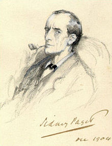

Sherlock Holmes in a 1904 illustration by Sidney Paget
| first apperance |
A Study in Scarlet |
| Created by |
Sir Arthur Conan Doyle |
| Information |
| Gender |
Male |
| Occupation |
Consulting detective |
| Family |
Mycroft Holmes (brother) |
| Nationality |
British |
About
Sherlock Holmes (/ˈʃɜːrlɒk ˈhoʊmz/ or /-ˈhoʊlmz/) is a fictional private detective created by British author Sir Arthur Conan Doyle. Referring to himself as a "consulting detective" in the stories, Holmes is known for his proficiency with observation, deduction, forensic science, and logical reasoning that borders on the fantastic, which he employs when investigating cases for a wide variety of clients, including Referring to himself as a "consulting detective" in the stories, Holmes is known for his proficiency with observation, deduction, forensic science, and logical reasoning that borders on the fantastic, which he employs when investigating cases for a wide variety of clients, including Scotland Yard.